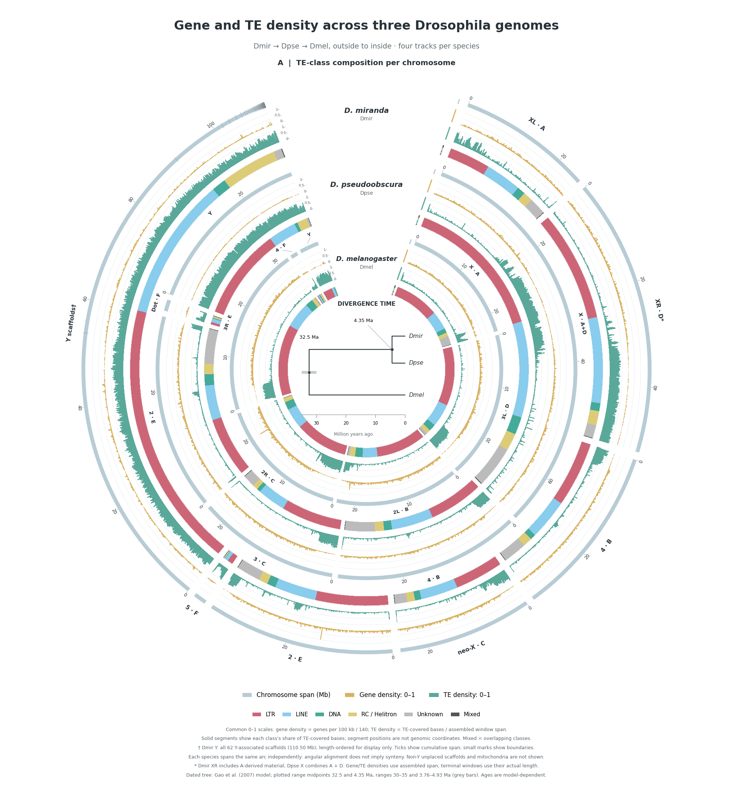
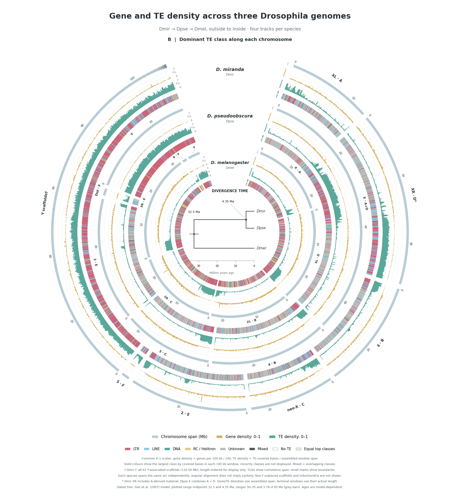

A · Chromosome composition
Broad segments show each class's share of TE-covered bases. These segments do not locate the classes along the chromosome.

Same genomes, same data, same 0–1 density scales. Dmir outside → Dpse → Dmel inside.
Genes: density per 100 kb ÷ 140. TEs: covered bases ÷ window length. The scales are shared by every species.
Broad segments show each class's share of TE-covered bases. These segments do not locate the classes along the chromosome.

Each 100 kb window has the colour of its largest TE class. Minority classes are omitted. White = no TE; pale beige = equal top classes.

Download both designs (two-page PDF) · Methods and provenance · Chromosome composition table
All 62 Dmir Y scaffolds are retained. Their concatenation is for display only. Angular alignment between species does not imply synteny. The inherited time-scaled tree uses the identified Gao et al. (2007) dating model; chromosome-origin dates in the reference screenshots are separate events.